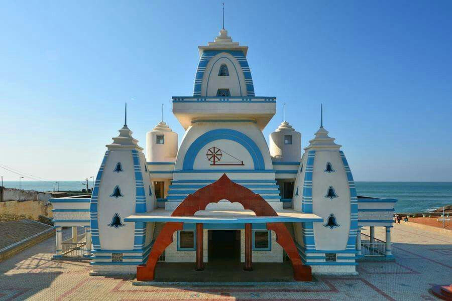
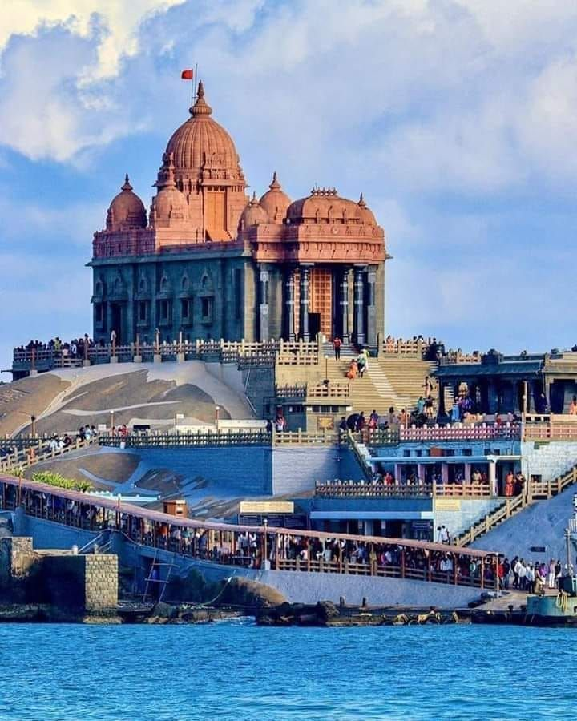
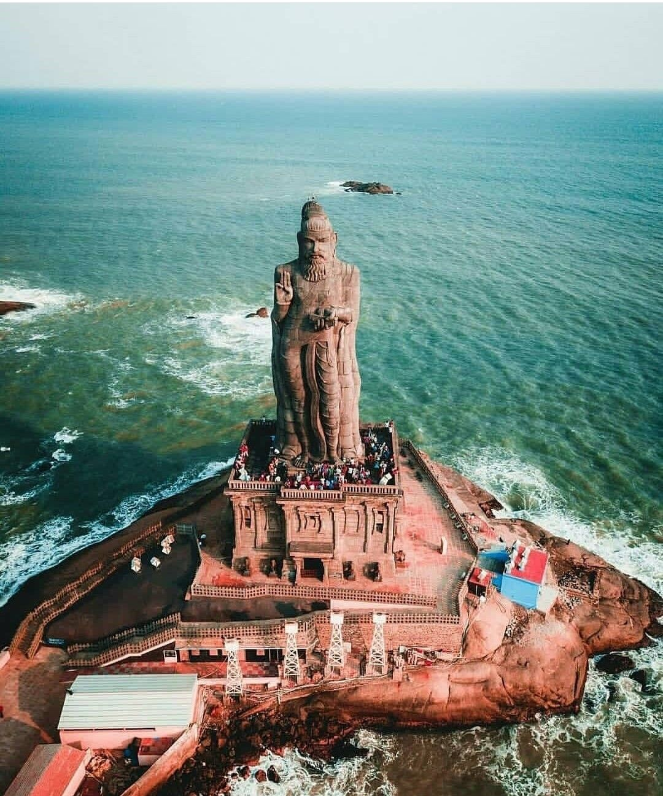
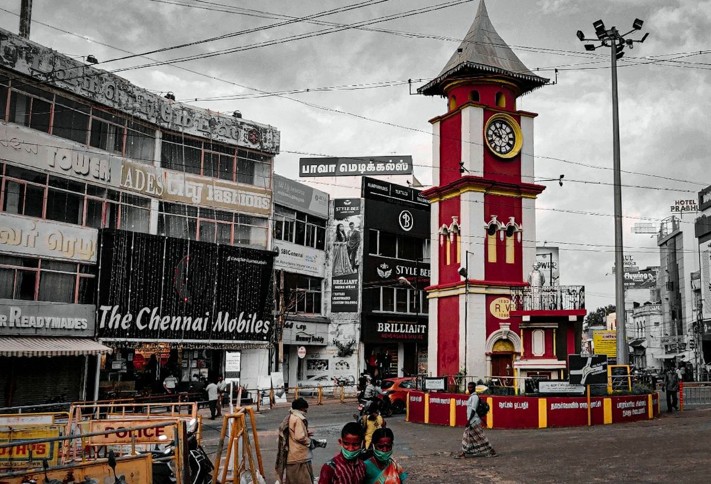
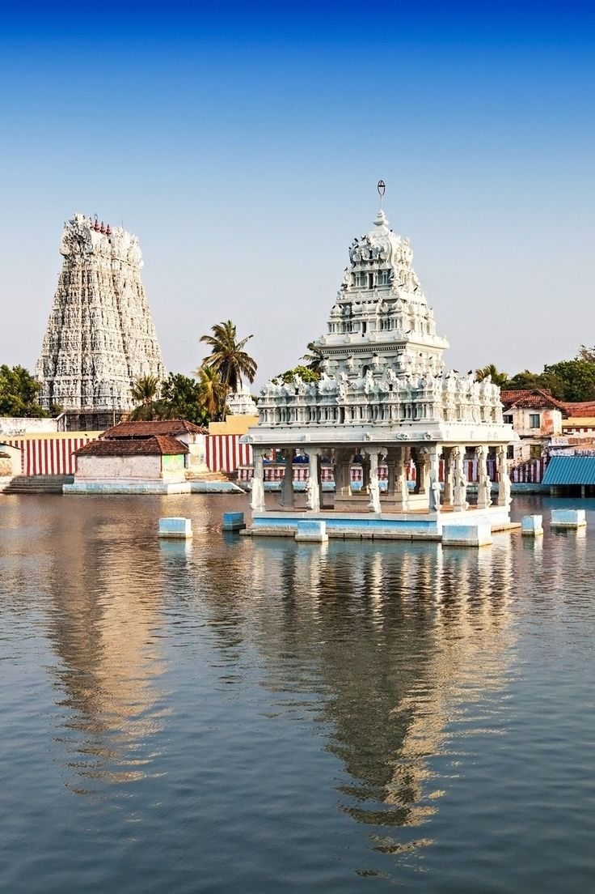

Kanyakumari is the southernmost tip of mainland India 🇮🇳, famous for its beautiful sunrise and sunset views over the ocean. It is a unique place where the Arabian Sea, Bay of Bengal, and Indian Ocean meet, creating a stunning natural view. The town has famous landmarks like the Vivekananda Rock Memorial , where Swami Vivekananda meditated, and the tall Thiruvalluvar Statue, which honors the great Tamil poet. The sacred Kanyakumari Amman Temple also attracts many devotees. With its natural beauty, cultural importance, and peaceful beaches,Kanyakumari is one of the most popular tourist destinations in India
KK gallery







